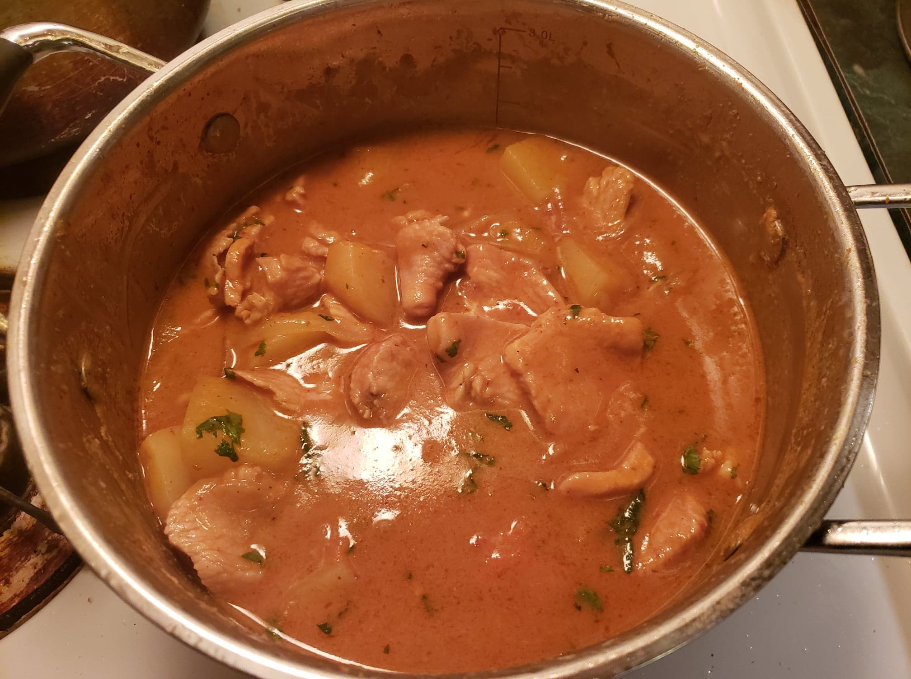

Massaman Curry

Ingredients:
- 2 tbsp Vegetable oil
- 1 small Onion, sliced
- 4 oz Massaman curry paste
- 3/4 inch piece Ginger, minced
- 1 1/4 lb Chicken breast, cut into slices
- 3 cups Potatoes, about 3 small potatoes, cubed
- Optional: 1 Carrot, sliced
- 1 13.5 oz can Coconut milk
- 3 tbsp Brown sugar
- 3 tbsp Fish sauce
- 3 tbsp Tamarind paste
- Optional: 1/3 cup Peanut butter
- 2 Limes, juiced
- Optional: 1 tbsp Cilantro, chopped
- Optional: 1 tbsp Peanuts or Cashews, chopped
Instructions:
- Heat vegetable oil in a pot over medium heat. Add onion and sauté until starting to become translucent. Stir in curry paste and minced ginger; cook and stir for 2 minutes. Stir in the sliced chicken and cook until the pieces turn white on the outside, about 3 minutes.
- Stir in the coconut milk, potatoes, carrot, brown sugar, fish sauce, tamarind paste, and peanut butter. Bring to a boil, then reduce heat to medium-low, cover, and simmer until the potatoes are tender and the chicken pieces are no longer pink in the center, about 20 minutes. Add the lime juice and cook for an additional 5 minutes.
- Remove from heat and, if using, add the cilantro and peanuts/cashews and mix until incorporated.